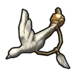

Torque Quebrado
Componente de Artefato · Tier 11 · Nível 43
Os restos quebrados de um Amuleto artefato. Serve para fabricar o Torque da Paz.
Economia
Valor
625.000

Os restos quebrados de um Amuleto artefato. Serve para fabricar o Torque da Paz.